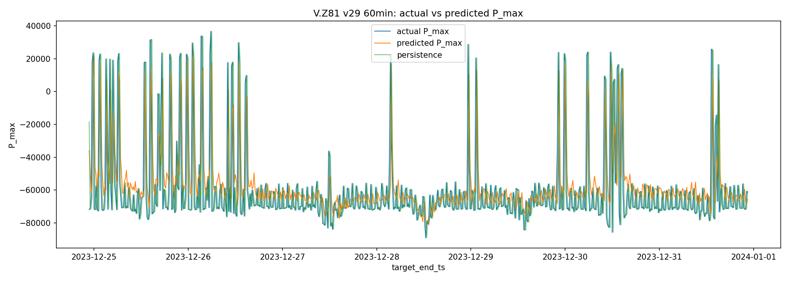
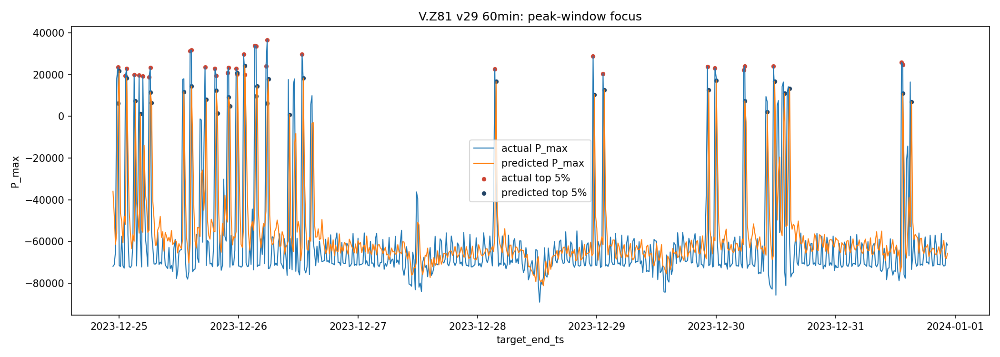
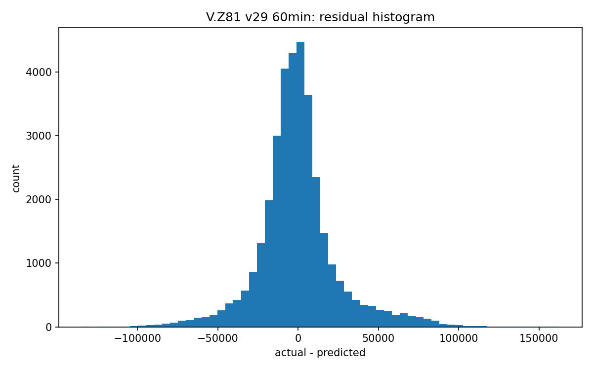

이 모델은 mart.peak_feature_15min에서 15분 단위 P.max_value를 타깃으로 사용해 다음 60min 피크 전력값을 예측합니다. 입력은 과거 24시간의 15분 feature입니다.
Persistence baseline은 직전 15분 P_max를 이후 예측값으로 반복하는 기준선입니다. Test RMSE 개선율은 15.16%, MAE 개선율은 6.85%입니다.
| split | mae | rmse | mape_pct | n_values | series |
|---|---|---|---|---|---|
| train | 14565.268555 | 21685.892578 | 141.635239 | 534440 | model |
| train | 17552.570312 | 28699.435547 | 183.874649 | 534440 | persistence |
| validation | 14036.653320 | 21271.986328 | 135.839920 | 136444 | model |
| validation | 15050.209961 | 24535.388672 | 168.451019 | 136444 | persistence |
| test | 21841.800781 | 31375.751953 | 154.808380 | 140140 | model |
| test | 23448.416016 | 36981.777344 | 164.472931 | 140140 | persistence |
| metric | series | quantile | actual_threshold | candidate_threshold | precision | recall | f1 | overlap_count | actual_peak_count | candidate_peak_count | mae_minutes | median_minutes | within_15min_pct | within_30min_pct | within_60min_pct | days |
|---|---|---|---|---|---|---|---|---|---|---|---|---|---|---|---|---|
| top_5pct_peak_capture | model | 0.950 | 102405.085938 | 92875.049609 | 0.681033 | 0.680936 | 0.680985 | 4772.0 | 7008.0 | 7007.0 | NaN | NaN | NaN | NaN | NaN | NaN |
| top_5pct_peak_capture | persistence | 0.950 | 102405.085938 | 102405.085938 | 0.669663 | 0.669663 | 0.669663 | 4693.0 | 7008.0 | 7008.0 | NaN | NaN | NaN | NaN | NaN | NaN |
| top_3pct_peak_capture | model | 0.975 | 138205.809375 | 119509.232031 | 0.626427 | 0.626427 | 0.626427 | 2195.0 | 3504.0 | 3504.0 | NaN | NaN | NaN | NaN | NaN | NaN |
| top_3pct_peak_capture | persistence | 0.975 | 138205.809375 | 138205.809375 | 0.629566 | 0.629566 | 0.629566 | 2206.0 | 3504.0 | 3504.0 | NaN | NaN | NaN | NaN | NaN | NaN |
| top_1pct_peak_capture | model | 0.990 | 178907.609375 | 146462.399844 | 0.486448 | 0.485755 | 0.486101 | 682.0 | 1404.0 | 1402.0 | NaN | NaN | NaN | NaN | NaN | NaN |
| top_1pct_peak_capture | persistence | 0.990 | 178907.609375 | 178907.609375 | 0.539174 | 0.539174 | 0.539174 | 757.0 | 1404.0 | 1404.0 | NaN | NaN | NaN | NaN | NaN | NaN |
| daily_t_plus_1_peak_time | model | NaN | NaN | NaN | NaN | NaN | NaN | NaN | NaN | NaN | 177.904110 | 15.0 | 50.958904 | 58.082192 | 64.383562 | 365.0 |
| daily_t_plus_1_peak_time | persistence | NaN | NaN | NaN | NaN | NaN | NaN | NaN | NaN | NaN | 17.630137 | 15.0 | 99.726027 | 99.726027 | 99.726027 | 365.0 |
| metric | series | quantile | actual_threshold | candidate_threshold | precision | recall | f1 | overlap_count | actual_peak_count | candidate_peak_count | mae_minutes | median_minutes | within_15min_pct | within_30min_pct | within_60min_pct | days |
|---|---|---|---|---|---|---|---|---|---|---|---|---|---|---|---|---|
| top_5pct_peak_capture | model | 0.95 | 102405.085938 | 92875.049609 | 0.681033 | 0.680936 | 0.680985 | 4772.0 | 7008.0 | 7007.0 | NaN | NaN | NaN | NaN | NaN | NaN |
| top_5pct_peak_capture | persistence | 0.95 | 102405.085938 | 102405.085938 | 0.669663 | 0.669663 | 0.669663 | 4693.0 | 7008.0 | 7008.0 | NaN | NaN | NaN | NaN | NaN | NaN |
| metric | series | quantile | actual_threshold | candidate_threshold | precision | recall | f1 | overlap_count | actual_peak_count | candidate_peak_count | mae_minutes | median_minutes | within_15min_pct | within_30min_pct | within_60min_pct | days |
|---|---|---|---|---|---|---|---|---|---|---|---|---|---|---|---|---|
| daily_t_plus_1_peak_time | model | NaN | NaN | NaN | NaN | NaN | NaN | NaN | NaN | NaN | 177.904110 | 15.0 | 50.958904 | 58.082192 | 64.383562 | 365.0 |
| daily_t_plus_1_peak_time | persistence | NaN | NaN | NaN | NaN | NaN | NaN | NaN | NaN | NaN | 17.630137 | 15.0 | 99.726027 | 99.726027 | 99.726027 | 365.0 |
| method | candidate_version | validation_rmse | weight |
|---|---|---|---|
| v29 | v16 | 22512.460938 | 0.000000 |
| v29 | v20 | 21471.257812 | 0.069546 |
| v29 | v23 | 21401.572266 | 0.320810 |
| v29 | v25 | 21409.613281 | 0.292662 |
| v29 | v27 | 21506.275391 | 0.316982 |
{
"table": "mart.peak_feature_15min",
"logical_meter": "V.Z81",
"target": "measurement='P'.max_value as P_max",
"input_hours": 24,
"output_range": "60min",
"horizon_steps": 4,
"step_minutes": 15,
"feature_columns": [
"P_mean",
"P_max",
"P_std",
"U1_mean",
"PF_mean",
"Ta_mean",
"Igm_mean",
"hour_sin",
"hour_cos",
"dayofweek_sin",
"dayofweek_cos",
"month_sin",
"month_cos",
"is_weekend"
],
"candidate_versions": [
"v16",
"v20",
"v23",
"v25",
"v27"
],
"best_single_candidate": "v23",
"training_device": "gpu",
"max_fit_windows": 10000,
"split_policy": "train=2018-2021, validation=2022, test=2023 by target timestamp",
"dropped_rows": 5006,
"skipped_windows": 0,
"method": "v29"
}


